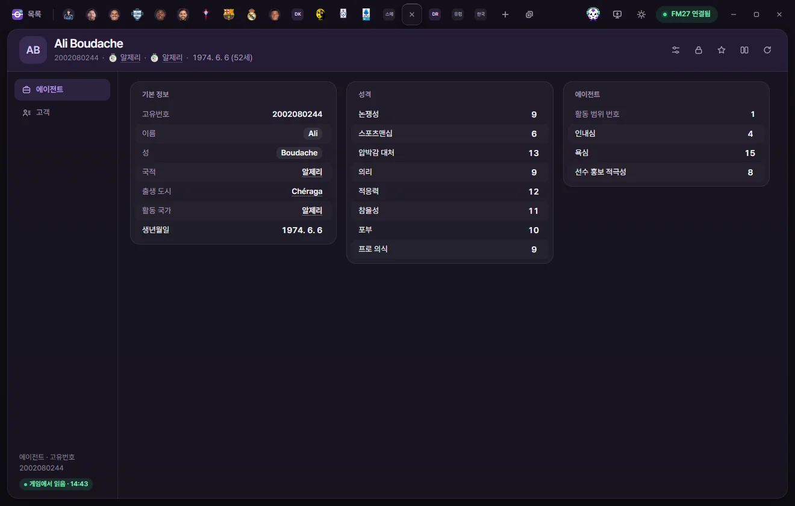
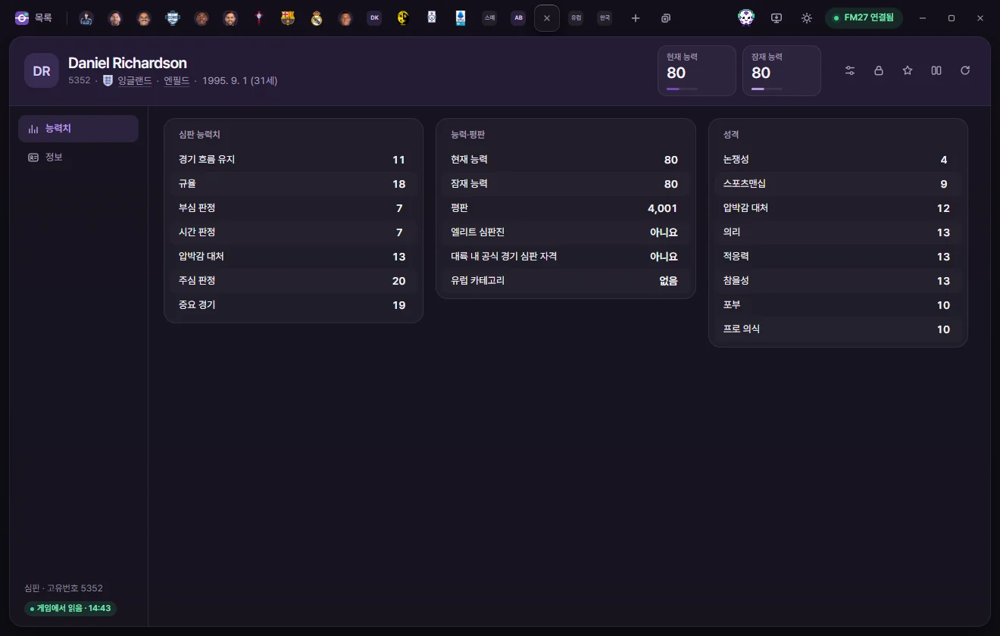

Edit tabs
Agent & official
How to view and edit an agent's personality, negotiating traits, and client players, and how to edit a match official's attributes, reputation, qualifications, and appearance.
Open the Agent tab or Official tab by clicking a name in the list. Editing values and saving work the same way as on the Player tab. Editing values on the Player page
On both tabs, the buttons at the top right are Presets, Locks, Favourites, Compare, and Reload from game. There is no ⚡ button. Player tab header
Agent


Tab header
Below the name you'll see their Unique ID, Nationality, Based nation, and Date of birth (age). There are no number cards. In the Agents list, you can sort by the 'Client count' column.
There are 2 sub-pages: Agent and Clients.
Agent page
| Section | Field | Description | Editable range |
|---|---|---|---|
| Overview | Unique ID | Read-only | |
| Overview | First name, Surname | Click to edit the text. Cannot be left blank | Up to 60 characters |
| Overview | Nationality, City of birth, Based nation | Click to open the corresponding tab | Read-only |
| Overview | Date of birth | Date | |
| Agent | Scope number | Read-only | |
| Agent | Patience, Greed | 1–20 | |
| Agent | Player promotion | Appears to control how actively the agent pitches client players to clubs | 1–20 |
| Personality | Controversy, Sportsmanship, Pressure, Loyalty, Adaptability, Temperament, Ambition, Professionalism | 1–20 |
The first time you edit and save a name, FMAX asks once whether you have backed up your save.
Clients page

- Client players: A list of players represented by this agent. Click any name to open their Player tab. There is no option to add or remove clients.
- Appearance: Language ID (read-only), Ethnicity, Hair colour, Hair length, and Skin tone (0–20). The choices match those in Player appearance.
Official

Tab header
- Below the name you'll see their Unique ID, Nationality, Home city, and Date of birth (age).
- The number cards show Current ability and Potential ability (1–200 each). Click either card to type a number directly.
There are 2 sub-pages: Attributes and Info.
Attributes page
| Section | Field | Description | Editable range |
|---|---|---|---|
| Official attributes | Allowing flow, Discipline, Running line, Time keeping, Pressure, Refereeing, Important Matches | 1–20 | |
| Ability and reputation | Current ability, Potential ability | 1–200 | |
| Ability and reputation | Reputation | 0–10,000 | |
| Ability and reputation | Elite list official, Continental official | Usually turned on together; 5 South Korean officials have only Continental official turned on | Yes, No |
| Ability and reputation | European category | European elite group, European elite development group, European first/second/third group, None, Not set. Higher group numbers have lower average ability; the same category numbers are also used for Asian and South American officials | Options |
| Personality | Controversy, Sportsmanship, Pressure, Loyalty, Adaptability, Temperament, Ambition, Professionalism | 1–20 |
Info page


| Section | Field | Description | Editable range |
|---|---|---|---|
| Overview | Unique ID, Gender | Read-only | |
| Overview | First name, Surname, Common name | Click to edit the text. First name and Surname cannot be left blank | Up to 60 characters |
| Overview | Nationality, City of birth, Home city | Click to open the corresponding tab | Read-only |
| Overview | Date of birth | Date | |
| Appearance | Language ID | Read-only | |
| Appearance | Ethnicity, Hair colour, Hair length, Skin tone | Same options as for players | Options; Skin tone 0–20 |
The Assigned competitions list shows the competitions this official takes charge of (if the Competition list hasn't been read yet, FMAX loads it first). Click any competition to open its Competition tab. There is no option to add or remove competitions.